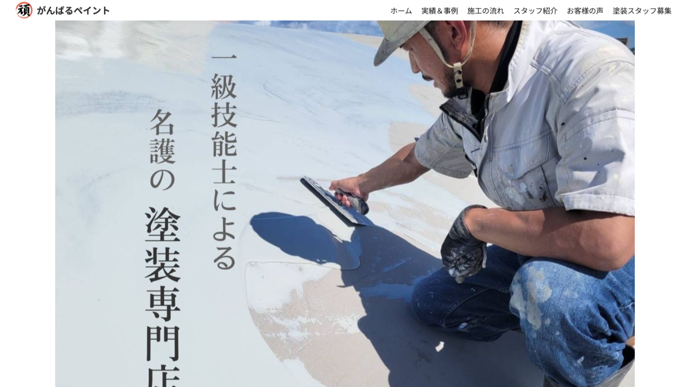

プロフィール
PROFILE
前職では塗装業・空調設備業に従事し、現場作業の中で「段取り力」と「丁寧な対応」の重要性を学びました。塗装業では、一般住宅や施設の外壁・内装塗装を担当し、材料準備からお客様への進捗報告・作業説明までを行い、信頼関係の構築に努めました。空調設備業では、家庭用エアコンや業務用冷蔵・冷凍設備の施工を担当し、段取りと丁寧さの両立を常に意識してきました。
ホームページを持たなかった塗装会社のために、WordPressでサイトを制作。スマホ対応やSEO対策、BEM記法による保守性向上、カスタム投稿タイプの導入による更新効率化などを実施しました。制作にあたっては、社長へのヒアリングを重ね、「お客様に安心感を与える」構成やデザインを心がけ、その結果、案件増加につながりました。
必要性を感じたら自ら学び、改善点を見つけて実行に移すことを得意としています。今後も「伝わる・使いやすい」Webサイト制作を通じて、お客様や企業の魅力を的確に発信できる制作者として成長していきたいと考えています。
スキル
SKILLS- HTML5
- SCSS / CSS（BEM含む）
- JavaScript/jQuery
- WordPress
- Git / GitHub
制作履歴
NEWS
Netlifyでホスティング。トップページにOGP・ファビコン設置、リンク追加によるUI整備。
Netlifyでポートフォリオサイトと作成したWeb制作練習サイト（ダミーサイト）をホスティング。OGP設定を追加した。ファビコン作成と設定。作成した各サイトのサムネイルを作成し追加。カードの間隔調整とリンク再設定。
スムーススクロール・トップへ戻るアニメーション追加
アニメーション(スムーススクロール、トップ戻るボタン)。スムーススクロールはcssではなくjQueryで作成した。
BEM構造導入、色調整、レイアウト改善
Hero,Skills作成、HTML&Cssクラス名とレイアウト変更、BEM設定重視。メインカラー、サブカラー変更。
SCSSのバージョン対応
Scssの今後のバージョンアップに関しての対応。
ポートフォリオ制作開始
ポートフォリオのトップページを作成。HTML 大体の骨組みとダミー画像を挿入,Scss(css 自動コンパイル),images ダミー画像入れる。今回のサイト作成から'rem'で指定する事を意識して作成する。次はコンタクトフォームの作成、サムネイルの作成し差し替える。全ての文章。